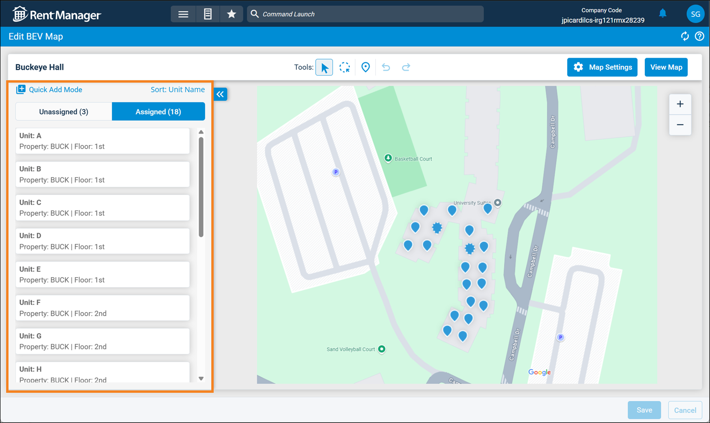
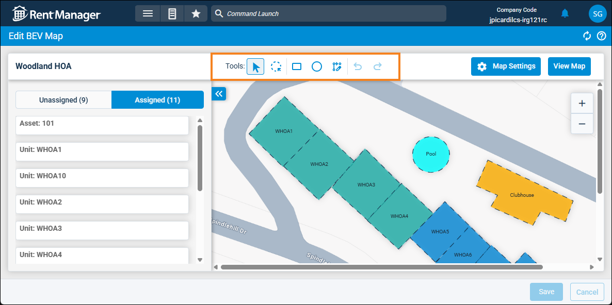
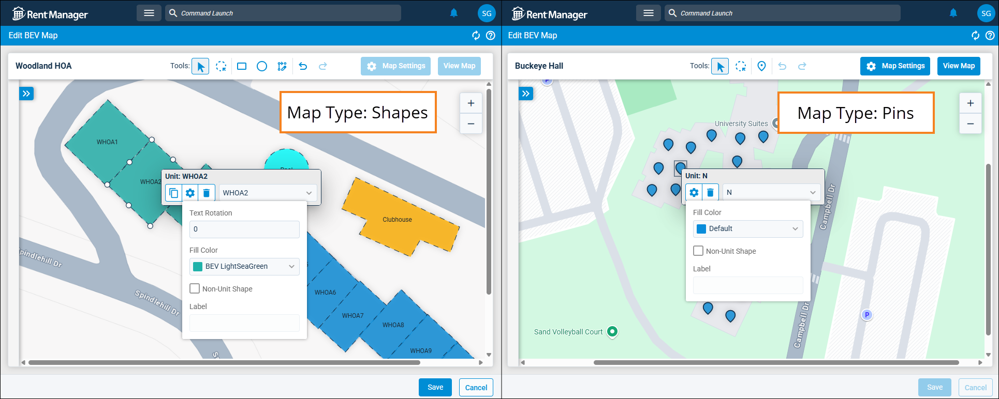

Source: https://rmxhelp.rentmanager.com/Topics/Express/CSH/BEV-Map-Edit.htm
Edit BEV Map (Page)
Bird's eye view (BEV) is a tool that allows you to use images of your properties to locate and view various details about the units at your properties, similar to viewing a map. This includes an overhead view of the property, shapes or pins that are linked to their respective unit accounts, and various overlays to display other specified data for the units. You can edit any of the maps you created as needed.
Warning
Rent Manager Express has improved map-making capabilities, allowing you to create very large map images in bird's eye view that may not be accessible in Rent Manager 12. If a map image exceeds 2500 x 2500 px, the map will not load in Rent Manager 12.
Related Privileges
| Group | Privilege | Column |
|---|---|---|
| Bird's Eye View (BEV) | BEV Maps | View, Edit |
For more information, refer to Control User Access.
To edit a BEV map, go to  arrow_forward Rental Info arrow_forward Bird's Eye View (BEV) arrow_forward Manage BEV Maps and select a map from the list.
arrow_forward Rental Info arrow_forward Bird's Eye View (BEV) arrow_forward Manage BEV Maps and select a map from the list.
Unit List

On the left, a list of all the units at the map's selected properties display. To change the order in which the units are listed, click Sort. The following tabs are available:
| Tab | Description |
|---|---|
|
Assigned |
The units at the selected properties that are linked to a shape or pin on the map. |
|
Unassigned |
The units at the selected properties that are not linked to a shape or pin on the map. |
More Information
If the map type uses Pins to indicate units, you can click  Quick Add Mode to quickly place pins for each unassigned unit listed in the Unassigned tab. Once pins for all units are added, click Save & Exit Mode to save your changes and exit Quick Add Mode. Some options on the page are disabled while Quick Add Mode is active.
Quick Add Mode to quickly place pins for each unassigned unit listed in the Unassigned tab. Once pins for all units are added, click Save & Exit Mode to save your changes and exit Quick Add Mode. Some options on the page are disabled while Quick Add Mode is active.
Toolbar

Above the image of the map and the unit list is the toolbar, which allows you to edit the shapes or pins on your map image. The following tools are available:
| Tool | Description |
|---|---|
|
(select) |
Select pins or shapes on the map. You can also click and drag pins and shapes, or adjust shapes using this tool. |
|
(lasso) |
Click and drag an area on the map to select all pins or shapes within that space. You can also move the selected pins or shapes. |
|
|
Click on the map to drop a pin at that location. This option is available only if a map type of Pins was selected during map creation. |
|
|
Click and drag a square or rectangle shape to the desired size onto the map canvas. This option is available only if a map type of Shapes was selected during map creation. |
|
|
Click and drag a circle or oval shape to the desired size onto the map canvas. This option is available only if a map type of Shapes was selected during map creation. |
|
|
Draw a custom shape on the map. Click to lay the first point of the shape, then continue to click each corner of the shape to draw the desired shape of the unit. To complete the shape, click the final point onto the original starting point to close it. To undo the previous point(s) laid for the shape, click the Esc key. This option is available only if a map type of Shapes was selected during map creation. |
|
(undo) |
The last action performed on the map is reverted. You can use this repeatedly to undo multiple actions. |
|
(redo) |
The last action you reverted using the undo option is restored. You can use this repeatedly to restore multiple reverted actions. |
Map Pins and Shapes

On the map itself, the pins or shapes added to the map's image or blank canvas background display. The map type selected during the BEV map creation determines if pins or shapes are used on the map. Map type cannot be changed after the map has been created.
If you click a pin or shape on the map, the following options are available:
| Option | Description | |||||
|---|---|---|---|---|---|---|
|
|
If you have multiple units of a similar size and shape, click to create a copy of that shape directly on top of the original. The duplicated shape can then be moved and reshaped as needed. This option is available only if a map type of Shapes was selected during map creation. |
|||||
|
|
Customize how the shape or pin displays. The following options are available: |
|||||
|
||||||
|
|
Removes the pin or shape from the map and any assigned unit is unassigned. |
|||||
|
Unit |
In the drop-down field, select the unit to assign to this pin or shape. If this shape or pin indicates another non-unit landmark or building (such as a clubhouse or pool), select <Unassigned>. |